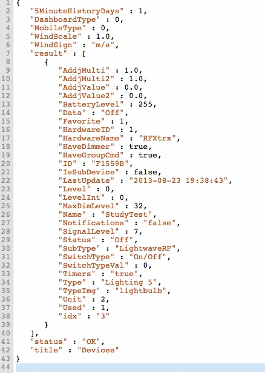
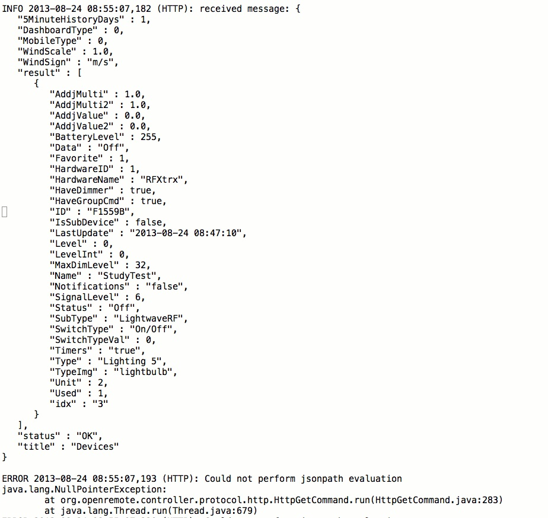
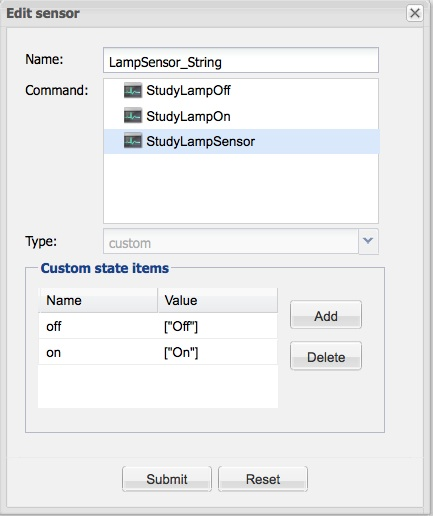

I'm just starting out with home automation and OpenRemote. I have LightWaveRF switches being controlled by an RFXtrx433 card, I'm using Domoticz to successfully switch the sockets off and on.
I'm attempting to use the HTML/JSON created by Domoticz to control the switches from within Open remote, but need some help parsing values.
When sending the following HTML request, http://192.168.0.xx:yyyy/json.htm?type=devices&filter=light&used=true&order=Name
I get the following response
"5MinuteHistoryDays" : 1, "Data" : "On", "Favorite" : 1, "HardwareID" : 1, "HardwareName" : "RFXtrx", "HaveDimmer" : true, "HaveGroupCmd" : true, "ID" : "F1559B", "IsSubDevice" : false, "LastUpdate" : "2013-08-22 01:42:51", "Level" : 0, "LevelInt" : 0, "MaxDimLevel" : 32, "Name" : "StudyTest", "Notifications" : "false", "SignalLevel" : 7, "Status" : "On", "SubType" : "LightwaveRF", "SwitchType" : "On/Off", "SwitchTypeVal" : 0, "Timers" : "true", "Type" : "Lighting 5", "TypeImg" : "lightbulb", "Unit" : 2, "Used" : 1, "idx" : "3" } ], "status" : "OK", "title" : "Devices"
How can I parse the "Data" value into OR in order to use this as a sensor?
Many thanks.
{kind=link}
{kind=link}
{kind=link}
{kind=link}
|
You could use JSON-Path but this response is not a valid JSON structure. Something is missing at the beginning and at the end. |
|
This is what the URL returns. Essentially I need to extract and evaluate the "Data" field for the sensor .  |
|
The JSONPath should be "/result/Status" |
|
Thanks for the help, but I'm still not able to get this to work, this is what I have in the command The sensor has been configured (against the command above) as type=switch Would really appreciate some help! |
|
Do you see anything in the log files? |
|
This is the output in the html log:  |
|
So I've made a little bit of progress. I believe the JSON expression I need is "$.result..Status", now the "Could not perform jsonpath evaluation" errors are no longer appearing, but the switch still doesn't work. When I use "$.result..Status" it returns "On" including the quotes, is this suitable for a switch type sensor? |
|
More progress, but still not quite there... Checking sensors.log it was clear the command enumerating the JSON expression was returning a string. I therefore created a 'custom' sensor and set the values to: The dev.log now seems a lot happier and is correctly returning the state when the lamp is on or off, see extract below: 2013-08-24 14:36:21,024 TRACE [Polling thread for sensor: LampSensor_String]: Processed '["On"]', received '["On"]' The switch is still not working though, it simply shows "Off" all the time. Any advice? |
|
Jumping in the middle, and I haven't read the full thread yet but: the log says the string returned (between single quotes) is ["On"]. You will probably need to find a way to strip out the brackets and double quotes first before the On value is consumed and accepted by the switch. |
|
Success! I changed the switch to 'custom' and included the whole string ["On"].  Thanks for the help, really appreciate it. |
|
Glad to hear it worked. Let us know how your project goes and spread the word. Thanks, – Juha |
|
Hello, I have been having a similar issue using x10. After setting up the switch using the guide at: the switch will not change from OFF and pressing it will only turn the lamp on. I tried the custom sensor idea, but no luck. Any other ideas I might try? |
|
Hi ! Get Method, http://192.168.zz.xx:yyyy/json.htm?type=command¶m=switchlight&idx=12&switchcmd=On&level=0 This worked from any web browser, but does not trigger any thing in Domotics from Openremote. Can somebody help me? Thanks in advance! |